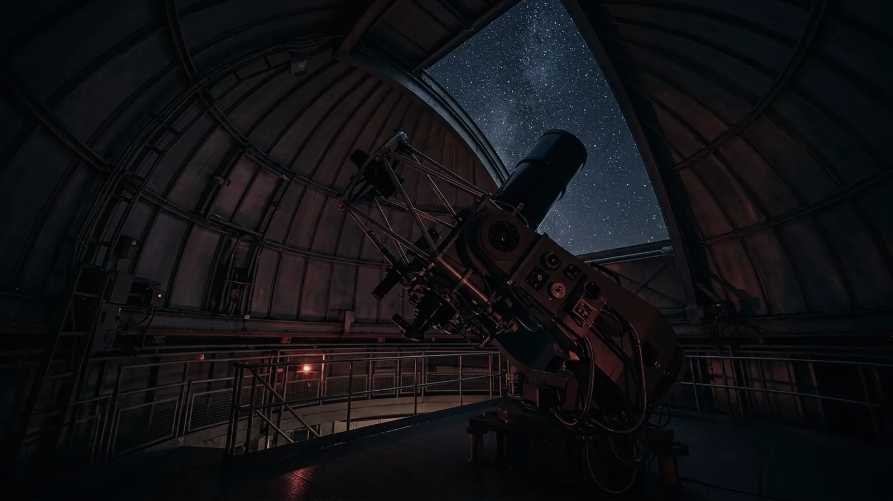

Plan your visit
Getting here, and surviving it
VELA is 612 metres up on an exposed fell. That is why the sky is good and it is also why people underestimate the walk from the car park. Read this bit.
Opening
| Day | Galleries | Dome shows |
|---|---|---|
| Monday | 10:00–17:00 | 11:00, 13:00, 15:00 |
| Tuesday | Closed | |
| Wednesday | 10:00–17:00 | 11:00, 13:00, 15:00 |
| Thursday | 10:00–17:00 | 11:00, 13:00, 15:00 |
| Friday | 10:00–17:00 | 11:00, 13:00, 15:00 |
| Saturday | 10:00–18:00 | 11:00, 13:00, 15:00, 16:30 |
| Sunday | 10:00–18:00 | 11:00, 13:00, 15:00, 16:30 |
Telescope nights start after the galleries close and run to roughly two and a half hours after astronomical darkness begins — so a January session ends near 21:00 and an August one near 02:30. The exact time is on your ticket, and tonight’s is here.
Getting here
By car
Hallow Fell Road leaves the A595 two kilometres north of Ravenglass. The last 3.4 km is single track with passing places and a 14% climb; it is gritted but not ploughed, and we close the road rather than risk it in deep snow. Free parking for 60 cars, six accessible bays by the entrance, four EV chargers.
By train
Ravenglass is on the Cumbrian Coast line. From the station it is 5.5 km, uphill. Our minibus meets the 09:41 and the 13:12 on days we are open, and runs back after the last dome show — book it free with your ticket, because it seats fourteen.
On foot
The fell path from Muncaster is a serious 90-minute walk with 500 metres of ascent. People do it, and it is beautiful, but not in the dark and not in trainers.
It is colder up here than you think
The single most common thing that spoils a telescope night is not cloud. It is someone leaving after forty minutes because they are too cold to enjoy it.
Wear
- More layers than you think, including a hat — you lose most heat standing still
- Proper boots. The terrace is unheated stone and it draws warmth straight out of thin soles
- Gloves you can still operate a focuser in
Please do not bring
- White torches. We hand out red ones at the door and they are yours to keep
- Phones on full brightness. Set them to red or leave them in a pocket
- Flash photography anywhere past the terrace door
None of this is fussiness. One white light ruins twenty minutes of adaptation for everybody standing near it, and there are twenty-three other people on the terrace.
Food, and the rest of it
The Meridian Room does soup, sandwiches and very good cake from 10:00 to 16:00, and hot drinks until close. On telescope nights it reopens at 20:00 and stays open until the session ends, because standing outside for two hours makes people want soup.
There is a small shop, mostly books and star charts and the red torches. Toilets including an accessible one are by the entrance and again by the dome.
Access
The galleries, the planetarium and the terrace are all step-free. The 1908 refractor is up fourteen stairs with a handrail and there is no lift — we are sorry about that, it is a 1908 wooden dome and there is nowhere to put one. A live view from the refractor’s eyepiece is shown on a screen in the Measuring Room.
Full detail, including the BSL-interpreted show dates and the relaxed sessions, is on our access page. If something you need is not there, ask us — it is a small building and we can usually arrange things.
